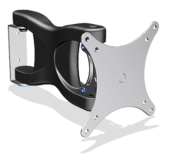
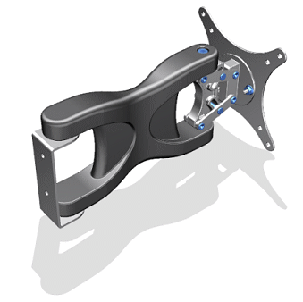
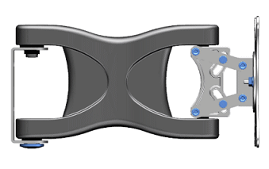
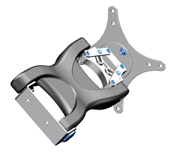

视角
您可以通过使用特定视角来控制场景对观察者的影响，以用于特殊用途。
视线高度查看角度
视线高度角度场景中观察者的查看角度，仿佛他们就站在场景中的对象前，直接面对这些物体。
视线高度查看角度时最常用并且最自然的查看角度，这些角度更不容易让人去注意场景的组成。

低视角
低视角通常低于视线高度，因此在场景中是略微向上观察物体。
这个角度可以使对象看起来更大、更威风。

高视角
高视角拥有与低视角相反的效果。由于是从视线高度上方俯视对象，因此对象看起来更小，可以让观察者有一个大致的了解。

鸟瞰视角
观察者位于场景中对象的正上方，这个类型的角度在显示场景中对象的整体时比较有用。

倾斜视角
倾斜视角可以使观察平面不再平行于水平。
倾斜视角可以使场景看起来更生动，但可能会使观察者产生视觉混乱，在一些情况下，可能会产生动感。
